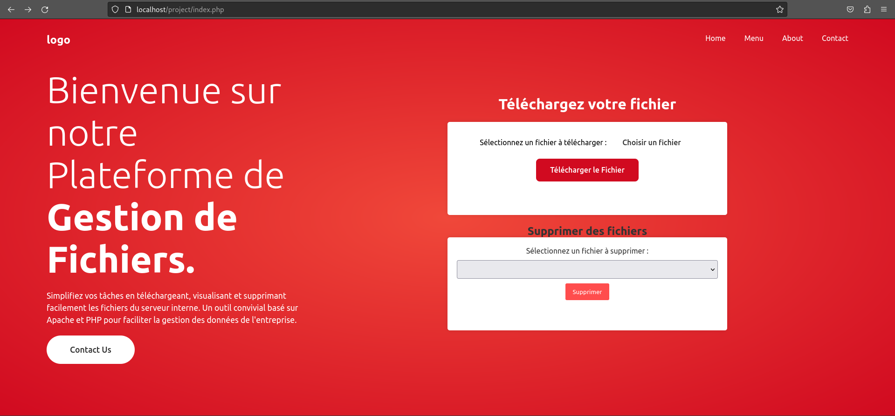
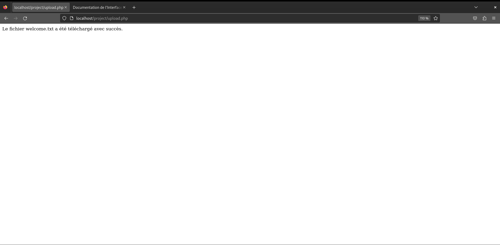
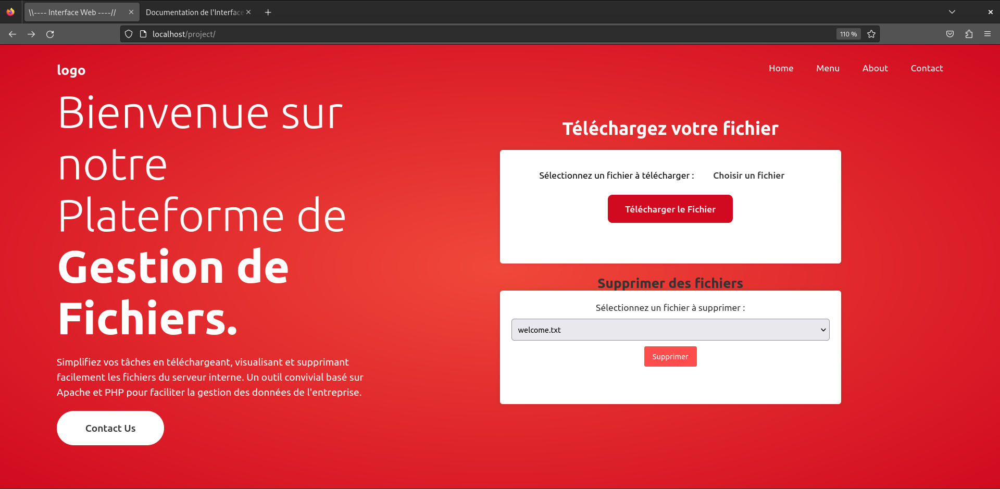

Documentation de l'interface Web pour Télécharger ,Afficher ,et supprimer des fichiers.
Cette documentation vous explique comment utiliser l'interface web que vous avez créée pour télécharger, afficher et supprimer des fichiers sur un serveur Apache. L'interface web est composée de trois fichiers PHP : index.php, upload.php et delete.php, et d'un répertoire uploads qui contient les fichiers téléchargés.
Pour concevoir cette l'interface web, je me suis rasuré d'avoir installé et configuré le serveur Apache sur mon système Debian 12, ainsi que le module PHP pour traiter les fichiers PHP.J'ai également mit une copié des fichiers PHP et le répertoire uploads dans le répertoire racine du serveur web, généralement /var/www/html/project. J'ai également donné les permissions appropriées aux fichiers PHP et au répertoire uploads pour permettre au serveur web de les lire et de les écrire.
Dans les pages suivantes, vous trouverez le sommaire de la documentation, ainsi que les explications détaillées et les captures d'écran pour chaque fonctionnalité de l'interface web. Vous trouverez également une section qui contient une vidéo-capture du site, puis nous allons terminez avec qu'une conclusion.
Sommaire de la Documentation
- Page d'accueil de l'interface web
- Téléchargement de fichiers
- Suppression de fichiers
- Vidéo-capture du site
- multi-platform
- Conclusion
Page d'accueil de l'interface web
La page d'accueil de l'interface web est le fichier index.php, qui contient le formulaire pour télécharger des fichiers et la liste des fichiers existants. Vous pouvez accéder à cette page en ouvrant un navigateur web et en entrant l'adresse IP ou le nom de domaine de votre serveur, suivi de /index.php. Par exemple:
http://localhost/project/index.php
Vous devriez voir une page comme celle-ci:
Pour télécharger un fichier, vous devez cliquer sur le bouton "Choisir un fichier", qui ouvre une fenêtre pour sélectionner un fichier depuis votre appareil. Vous pouvez choisir n'importe quel fichier de type txt, csv, html, ou sh. Une fois que vous avez choisi un fichier, vous devez sur le button "ouvrir"puis sur la page d'accueil cliquer sur le bouton "Télécharger le Fichier", qui envoie le fichier au serveur. Vous verrez alors un message indiquant si le téléchargement a réussi ou non.
Pour afficher ou supprimer un fichier, vous devez utiliser la liste déroulante qui contient les noms des fichiers stockés dans le répertoire uploads. Vous pouvez sélectionner un fichier et cliquer sur le lien "Afficher" pour ouvrir le fichier dans un nouvel onglet, ou cliquer sur le bouton "Supprimer" pour supprimer le fichier du serveur. Vous n'allez plus voir le fiche sur la liste
Téléchargement de fichiers
Le téléchargement de fichiers est géré par le fichier upload.php, qui reçoit le fichier depuis le formulaire de la page index.php et le sauvegarde dans le répertoire uploads. Vous n'avez pas besoin d'accéder directement à ce fichier, il est appelé automatiquement lorsque vous soumettez le formulaire de la page index.php.
Voici un exemple de message que vous pouvez voir après avoir téléchargé un fichier valide:

Suppression de fichiers
La suppression de fichiers est gérée par le fichier delete.php, qui reçoit le nom du fichier à supprimer depuis le formulaire de la page index.php et le supprime du répertoire uploads. Vous n'avez pas besoin d'accéder directement à ce fichier, il est appelé automatiquement lorsque vous cliquez sur le bouton "Supprimer" de la page index.php.
Voici un exemple de message que vous pouvez voir après avoir supprimé un fichier existant:

Vidéo-capture du site
Dans cette page, vous allez voir une vidéo qui montre le fonctionnement de l'interface web, avec une narration ou des sous-titres pour expliquer les actions effectuées. La vidéo dure environ 2 minutes et couvre les principales fonctionnalités de l'interface web, comme le téléchargement, l'affichage et la suppression de fichiers. Vous pouvez regarder la vidéo en plein écran ou en mode fenêtré, et ajuster le volume ou la qualité selon vos préférences.
Voilà, vous avez vu la vidéo-capture du site. Vous pouvez revenir au sommaire ou passer à la conclusion.
multi-platform
Ce GIF illustre la fonctionnalité et la réactivité du projet de gestionnaire de fichiers, qui permet de télécharger, de visualiser et de supprimer des fichiers facilement sur tous les types d'écrans.


Grâce à ce GIF, vous pouvez apprécier la performance et la flexibilité du projet de gestionnaire de fichiers, qui vous donne accès à vos fichiers téléchargés et vous permet de les supprimer en quelques clics sur tout support : téléphone, iPad ou PC.
Conclusion de la Documentation
Dans cette documentation, vous avez appris comment utiliser l'interface web que j'ai concu pour télécharger, afficher et supprimer des fichiers sur un serveur Apache. Vous avez vu les prérequis nécessaires pour utiliser l'interface web, ainsi que les explications détaillées et les captures d'écran pour chaque fonctionnalité. Vous avez également vu une vidéo-capture du site qui montre le fonctionnement de l'interface web.
L'interface web que j'ai cree présente plusieurs avantages, comme la simplicité, la rapidité et la sécurité. Vous pouvez facilement télécharger, afficher et supprimer des fichiers sur le serveur, sans avoir besoin de connaissances techniques ou de logiciels spécifiques.
L'interface web que j'ai créée présente également quelques limites, comme la dépendance au serveur Apache, la compatibilité avec les navigateurs web et la gestion des erreurs tels que la tail,redundance des fichiers,et bien d"autre. Vous devez avoir installé et configuré le serveur Apache sur votre système Debian 12, ainsi que le module PHP pour traiter les fichiers PHP.
Nous espérons que cette documentation vous a été utile et que vous avez apprécié l'utilisation de l'interface web. Merci de votre attention et à bientôt.